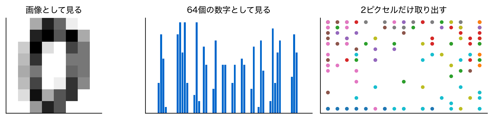
第10回 主成分分析②
X を1回特異値分解して、反復せずに解く
第I部 理論
場面①：写真1枚
白黒の写真1枚。今回は、これをデータとして扱う。
場面②：写真は数の表
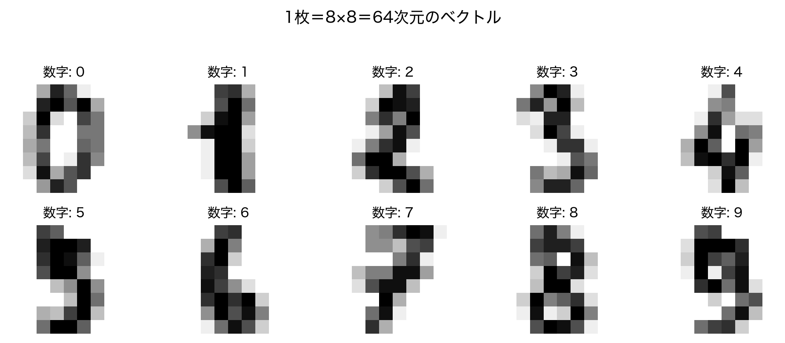
マスは画素の明るさ（黒0〜白1）。写真1枚は 427 行 × 400 列の表 \mathbf X。
場面③：少数の軸で近似したい
\min_{\mathbf F,\mathbf A}\ \lVert\mathbf X-\mathbf F\mathbf A^\top\rVert_F^2 \qquad\text{ただし}\ \mathbf A^\top\mathbf A=\mathbf I_Q
この表を Q 本の軸で近似する。目的関数は第9回の主成分分析と同じ。
場面④：前回は交互に解いた
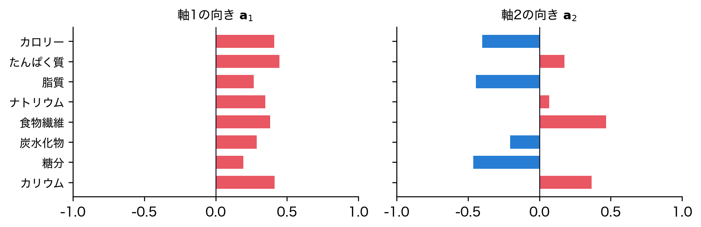
第9回の交互最小二乗法。2つの更新を繰り返し、初期値によらず同じ J に着いた。
場面⑤：反復のたびに分解した
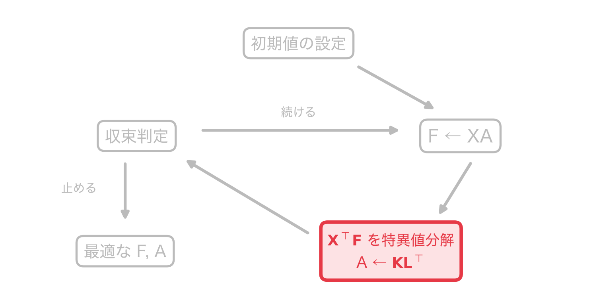
\mathbf A の更新のたびに、p\times Q の \mathbf X^\top\mathbf F を特異値分解（Singular Value Decomposition、SVD）していた。
今回の問い
反復せず1回で解けないか？
今回覚える言葉
- データ行列の特異値分解
- ランク
- 低ランク近似
- Eckart–Youngの定理
- 寄与率・累積寄与率
次の問い：Xそのものを分解したら
- 前回分解したのは、p\times Q の \mathbf X^\top\mathbf F
- 特異値分解は、どんな行列にも使える
データ行列 \mathbf X そのものを分解すると、何が出てくるか。まず2列の小さな例で見る。
直感①：食パン40枚
ここでは人工的なデータ。食パン 40 枚の焼き時間と焦げ目（平均を引いた値）。\mathbf X は 40×2。
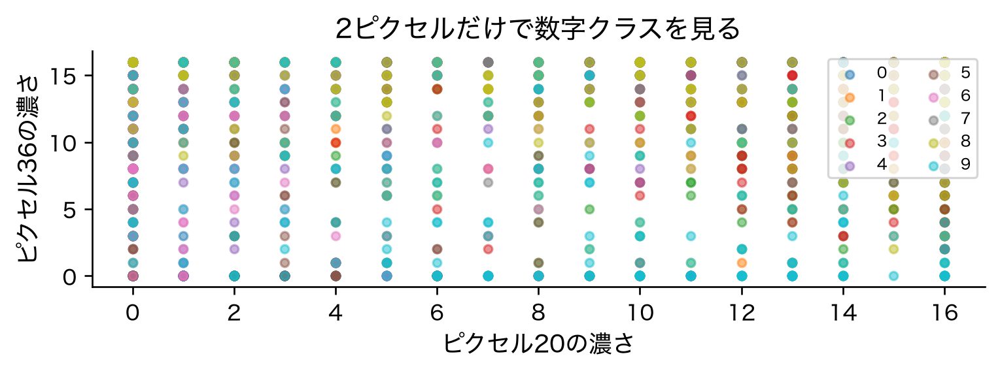
直感②：Xを特異値分解する
\mathbf X=\mathbf K\boldsymbol\Delta\mathbf L^\top
今度は、この40×2の表そのものを分解する。

直感③：Lは直角な2本の向き
\mathbf L=[\boldsymbol l_1,\boldsymbol l_2] は長さ1で互いに直角。\boldsymbol l_1 は点の雲の長い向き。
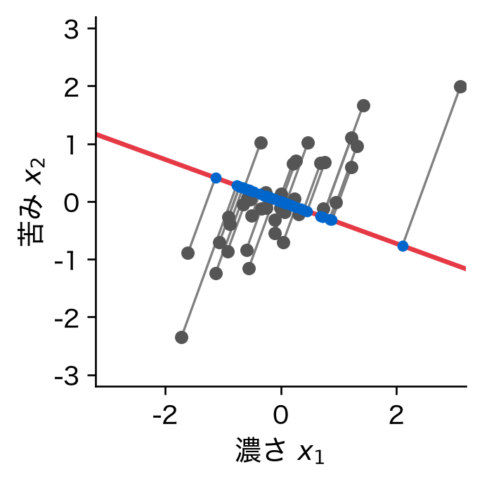
直感④：KΔは測り直した座標
\mathbf X\mathbf L=\mathbf K\boldsymbol\Delta
各点の座標を、\boldsymbol l_1 と \boldsymbol l_2 の向きで測り直したもの。
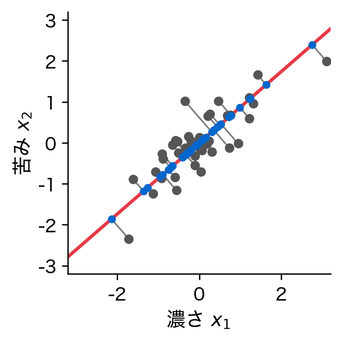
直感⑤：上位1本を残す
\boldsymbol l_1 の座標 \delta_1k_{i1} だけを残す。青い点は、第9回の直線の上の近似と同じ形。

直感⑥：捨てた1本が誤差
捨てた \boldsymbol l_2 の座標 \delta_2k_{i2} が、そのまま誤差（紫）になる。
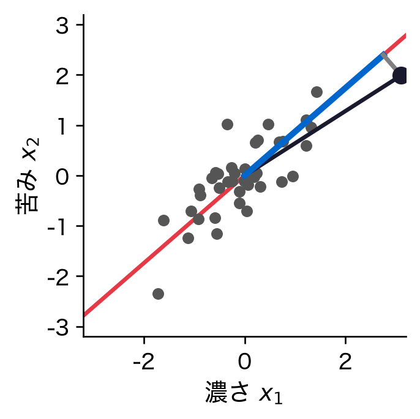
直感⑦：誤差の二乗和はδ₂²
\sum_{i}(\delta_2k_{i2})^2=\delta_2^2
\mathbf K の列は長さ1なので、紫の線の二乗和は \delta_2^2 = 6.98。

直感⑧：反復した答えと同じ
同じ40点に第9回の交互最小二乗法（Q=1）を回すと、J = 6.98。分解して1本捨てただけで、同じ値に着いた。
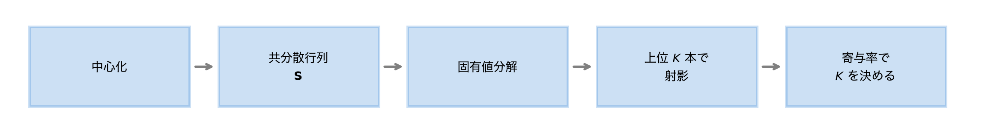
言葉を決める
- 2列では、分解して上位1本を残すと、反復した答えと同じ J になった
- p 列・Q 本でも同じことが言えるかを確かめたい
そのための道具を3つそろえる：分解の大きさ、「Q 本で書ける」の言い方、長さを変えない掛け算。
道具①：Xの特異値分解
\mathbf X=\mathbf K\boldsymbol\Delta\mathbf L^\top,\qquad \mathbf K^\top\mathbf K=\mathbf I_p,\quad \mathbf L^\top\mathbf L=\mathbf L\mathbf L^\top=\mathbf I_p
第9回の特異値分解を、n\times p（p\le n）の \mathbf X そのものに使う。
道具①：大きさを箱で見る
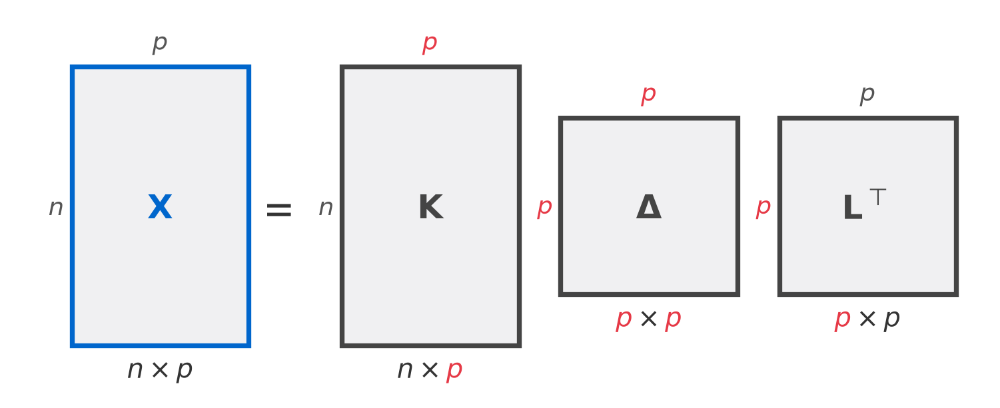
\mathbf K は n\times p の縦長、\mathbf L は p\times p の正方。特異値は \delta_1\ge\dots\ge\delta_p\ge0。
道具②：ランク
\operatorname{rank}(\mathbf Y)=\#\{\,m:\ \delta_m>0\,\}
n\times p の行列 \mathbf Y を特異値分解し、0でない特異値 \delta_m の個数を数える。
道具②：ランク1の行列
青い点を並べた40×2の行列は、どの行も \boldsymbol l_1 の定数倍。0でない特異値は1個で、ランク1。
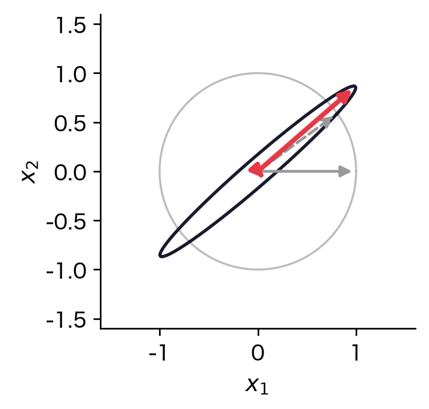
道具②：ランクQ以下＝FAᵀ
\operatorname{rank}(\mathbf Y)\le Q \quad\Longleftrightarrow\quad \mathbf Y=\mathbf F\mathbf A^\top,\quad \mathbf A^\top\mathbf A=\mathbf I_Q
\mathbf F は n\times Q、\mathbf A は p\times Q。すべての行が Q 本の向きの組み合わせで書ける。
道具③：長さを変えない掛け算
\lVert\mathbf K\mathbf M\rVert_F^2=\operatorname{tr}(\mathbf M^\top\mathbf K^\top\mathbf K\mathbf M)=\lVert\mathbf M\rVert_F^2 \qquad(\mathbf K^\top\mathbf K=\mathbf I)
列が長さ1で互いに直角な行列を掛けても、フロベニウスノルムは変わらない。右から \mathbf L^\top を掛けても同じ。
道具③：二乗和はδ²の和
\lVert\mathbf X\rVert_F^2=\lVert\mathbf K\boldsymbol\Delta\mathbf L^\top\rVert_F^2=\lVert\boldsymbol\Delta\rVert_F^2=\sum_{m=1}^{p}\delta_m^2
\mathbf K と \mathbf L^\top が両方消える。全マスの二乗和は、特異値の二乗和。
道具がそろった
- \mathbf X=\mathbf K\boldsymbol\Delta\mathbf L^\top：\mathbf K は n\times p、\mathbf L は p\times p
- ランク Q 以下の行列は、\mathbf F\mathbf A^\top の形に書ける
- 直角な行列を掛けても、二乗和は変わらない
では、\mathbf X の分解を、上位 Q 本と残りに分けてみる。
分解①：1マスずつ
x_{ij}=\sum_{m=1}^{p}\delta_m\,k_{im}\,l_{jm}
マス x_{ij} は、p 本の向きの寄与の和。第9回の目的関数の f_ia_j と同じ「行の位置 × 向きの成分」の形。
分解②：1枚ずつ重ねる
\mathbf X=\sum_{m=1}^{p}\delta_m\,\boldsymbol k_m\boldsymbol l_m^\top
\boldsymbol k_m と \boldsymbol l_m は \mathbf K と \mathbf L の第 m 列。\mathbf X は、重み \delta_m を付けた p 枚の重ね合わせ。
分解②：1枚はランク1

\boldsymbol k_m\boldsymbol l_m^\top は n\times p のランク1の行列。全マスの二乗和は \lVert\boldsymbol k_m\rVert_2^2\lVert\boldsymbol l_m\rVert_2^2=1。
分解③：上位Q枚と残り
\begin{aligned} \mathbf X&=[\mathbf K_1,\mathbf K_2] \begin{bmatrix}\boldsymbol\Delta_1&\\&\boldsymbol\Delta_2\end{bmatrix} [\mathbf L_1,\mathbf L_2]^\top\\ &=\mathbf K_1\boldsymbol\Delta_1\mathbf L_1^\top+\mathbf K_2\boldsymbol\Delta_2\mathbf L_2^\top=\mathbf X_1+\mathbf X_2 \end{aligned}
\mathbf K_1・\mathbf L_1 は左から Q 列、\boldsymbol\Delta_1 は上位 Q 個の特異値。
分解③：箱で見る
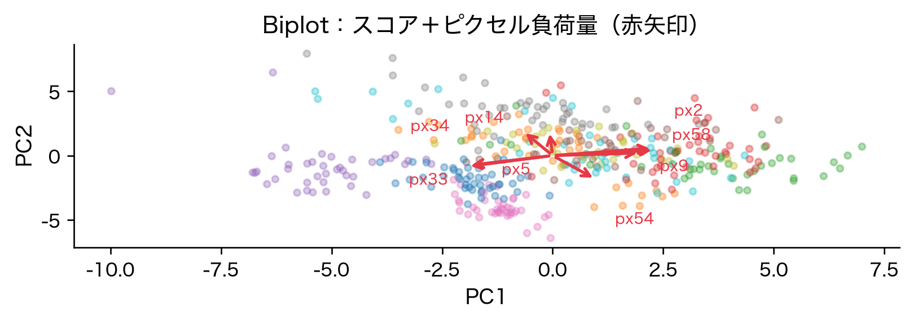
\mathbf X_1 も \mathbf X_2 も n\times p。\mathbf X_1 は n\times Q と Q\times p の積なので、(n+p)Q 個の数で持てる。
次の問い：最も近いのはどれか
- \mathbf X_1 は上位 Q 枚を重ねた、ランク Q 以下の行列
- ランク Q 以下の行列は、ほかにも無数にある
その中で、\mathbf X に最も近いのはどれか。
目的関数：1マスずつ
\sum_{i=1}^{n}\sum_{j=1}^{p}\bigl(x_{ij}-y_{ij}\bigr)^2
n\times p の \mathbf Y のマスを、\mathbf X のマスに近づける。第1回からの最小二乗法の形。
目的関数：低ランク近似
\min_{\mathbf Y}\ \lVert\mathbf X-\mathbf Y\rVert_F^2 \qquad\text{ただし}\ \operatorname{rank}(\mathbf Y)\le Q
大きさは n\times p のまま、ランクだけを Q 以下に落として \mathbf X に最も近い \mathbf Y を探す。
Eckart–Youngの定理
\hat{\mathbf Y}=\mathbf K_1\boldsymbol\Delta_1\mathbf L_1^\top
答えは上位 Q 枚を重ねただけの \mathbf X_1。反復も初期値も要らない。
F・A・Eとおく
\begin{aligned} &\mathbf F=\mathbf K_1\boldsymbol\Delta_1,\qquad \mathbf A=\mathbf L_1,\qquad \mathbf E=\mathbf K_2\boldsymbol\Delta_2\mathbf L_2^\top\\ &\lVert\mathbf X-\mathbf K_1\boldsymbol\Delta_1\mathbf L_1^\top\rVert_F^2=\lVert\mathbf X-\mathbf F\mathbf A^\top\rVert_F^2=\lVert\mathbf E\rVert_F^2 \end{aligned}
答えを、主成分分析の記号で書き直す。
主成分分析と同じ問題
\mathbf A^\top\mathbf A=\mathbf L_1^\top\mathbf L_1=\mathbf I_Q
主成分分析の制約を満たす。道具②で、ランク Q 以下の \mathbf Y は \mathbf F\mathbf A^\top と同じもの。2つは同じ問題。
Jの最小値
\min J=\lVert\mathbf K_2\boldsymbol\Delta_2\mathbf L_2^\top\rVert_F^2=\lVert\boldsymbol\Delta_2\rVert_F^2=\sum_{m=Q+1}^{p}\delta_m^2
道具③で \mathbf K_2 と \mathbf L_2^\top が消える。捨てた特異値の二乗和。
2列の例に戻る
p=2、Q=1 なら、捨てるのは \delta_2 だけ。\min J=\delta_2^2 = 6.98 が、紫の線の二乗和だった。

交互最小二乗法は動かない①
\mathbf A=\mathbf L_1\ \Longrightarrow\ \mathbf F=\mathbf X\mathbf L_1=\mathbf K_1\boldsymbol\Delta_1
この答えから第9回の \mathbf F の更新を1回計算すると、\mathbf F はそのまま。
交互最小二乗法は動かない②
\mathbf X^\top\mathbf F=\mathbf L\boldsymbol\Delta\mathbf K^\top\mathbf K_1\boldsymbol\Delta_1=\mathbf L_1\boldsymbol\Delta_1^2\mathbf I_Q^\top \ \Longrightarrow\ \mathbf A=\mathbf L_1\mathbf I_Q^\top=\mathbf L_1
続く \mathbf A の更新でも元に戻る。交互最小二乗法は、この答えで止まる。
次の問い：なぜ上位Q本か
- Eckart–Youngの定理は、答えが上位 Q 本だと言う
- なぜ上位 Q 本を残すのが最もよいのか
まず軸1本で、1行ずつのスカラーの式から確かめる。
最適性①：直角三角形
\hat f_i=\boldsymbol a^\top\tilde{\boldsymbol x}_i（第9回）なら、点・足・原点は直角三角形をなす。
\lVert\tilde{\boldsymbol x}_i\rVert_2^2=f_i^2+\lVert\boldsymbol e_i\rVert_2^2
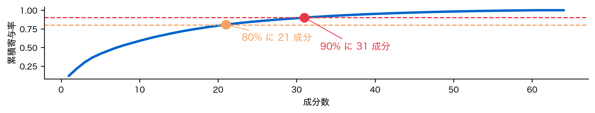
最適性②：誤差の最小＝得点の最大
J(\boldsymbol a)=\sum_{i=1}^{n}\sum_{j=1}^{p}x_{ij}^2-\sum_{i=1}^{n}f_i^2 =\lVert\mathbf X\rVert_F^2-\lVert\mathbf X\boldsymbol a\rVert_2^2
三角形を n 個足した。J を最小にする ＝ 直線の上の得点の二乗和を最大にする。
最適性③：得点を特異値で書く
\begin{aligned} \lVert\mathbf X\boldsymbol a\rVert_2^2&=\boldsymbol a^\top\mathbf L\boldsymbol\Delta^2\mathbf L^\top\boldsymbol a=\sum_{m=1}^{p}\delta_m^2\,w_m\\ w_m&=(\boldsymbol l_m^\top\boldsymbol a)^2\ge0,\qquad \sum_m w_m=1 \end{aligned}
得点の二乗和は、合計1の重みを \delta_m^2 に配った和。
最適性③：重みを配る
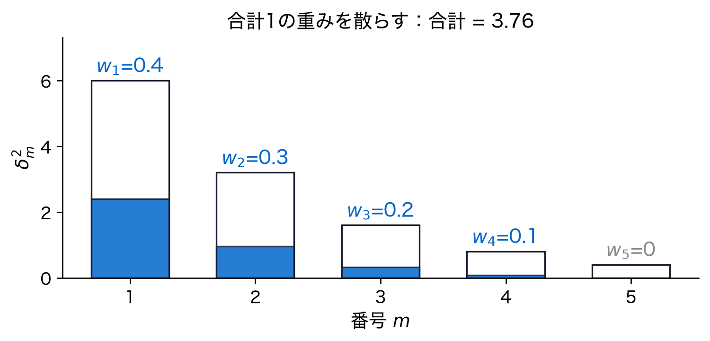
棒の高さが \delta_m^2、青が \delta_m^2w_m。重みを散らすと、和は小さい。
最適性④：1本ならδ₁²を取る
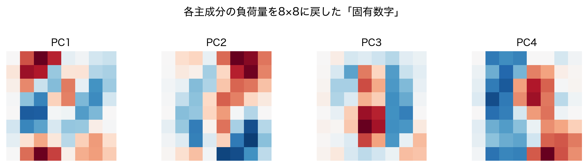
すべてを \delta_1^2 に置く \hat{\boldsymbol a}=\boldsymbol l_1 が最大。J の最小値は \sum_{m\ge2}\delta_m^2。
最適性⑤：Q本なら1まで

\lVert\mathbf X\mathbf A\rVert_F^2=\sum_m\delta_m^2w_m、w_m=\lVert\mathbf A^\top\boldsymbol l_m\rVert_2^2\le1、\sum_mw_m=Q。図は Q=2。
最適性⑥：Q本なら上位Q個
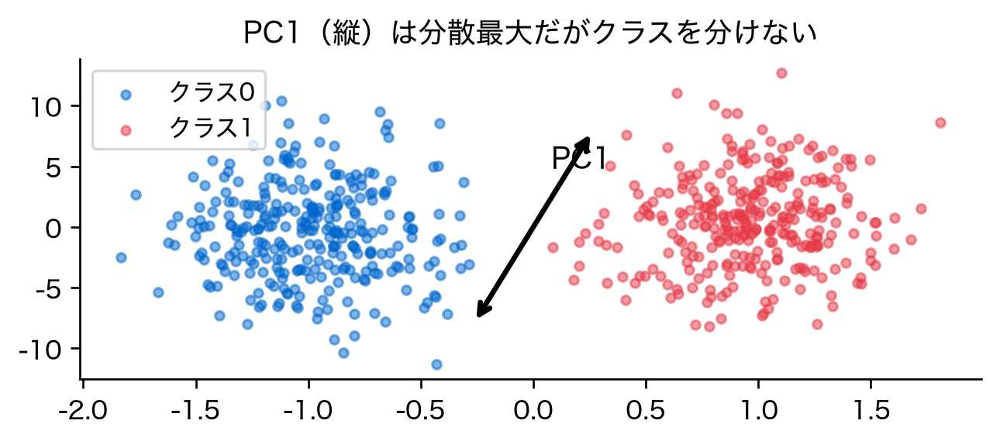
上位 Q 個に1ずつ置く \hat{\mathbf A}=\mathbf L_1 が最大。Q=1 とおけば最適性④に戻る。
アルゴリズム：特異値分解1回
- 用意する：列の平均を0にしたデータ行列 \mathbf X（n\times p）と、軸の数 Q
- 特異値分解を1回：\mathbf X=\mathbf K\boldsymbol\Delta\mathbf L^\top
- 上位 Q 本を取る：\mathbf A\leftarrow\mathbf L_1（\mathbf L の左から Q 列）、\mathbf F\leftarrow\mathbf X\mathbf A（=\mathbf K_1\boldsymbol\Delta_1）
- 誤差を出す：J=\sum_{m>Q}\delta_m^2
前回の手順と比べる
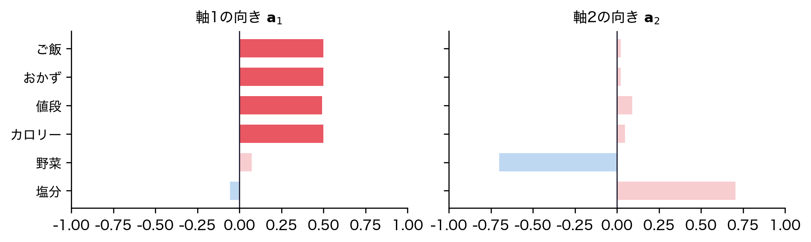
初期値の設定・反復・収束判定が、すべて消えた。
Qを変えるとき
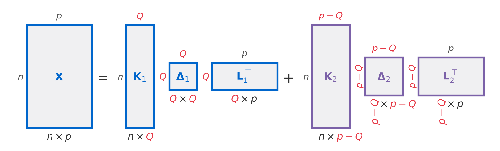
分解は Q によらない。Q を変えるときは、同じ分解から取る列の数を変えるだけ。
次の問い：答えから何が言えるか
- 答えは、1回の分解で出た
- J は、捨てた特異値の二乗和だった
では、残した分は全体の何割か。軸1・軸2の向きは決まるか。
帰結①：ホットケーキ60枚

ここでは人工的なデータ。ホットケーキ 60 枚の直径・厚さ・重さ（平均を引いた値）を分解した、特異値の二乗。
帰結②：Jは捨てたδ²の和
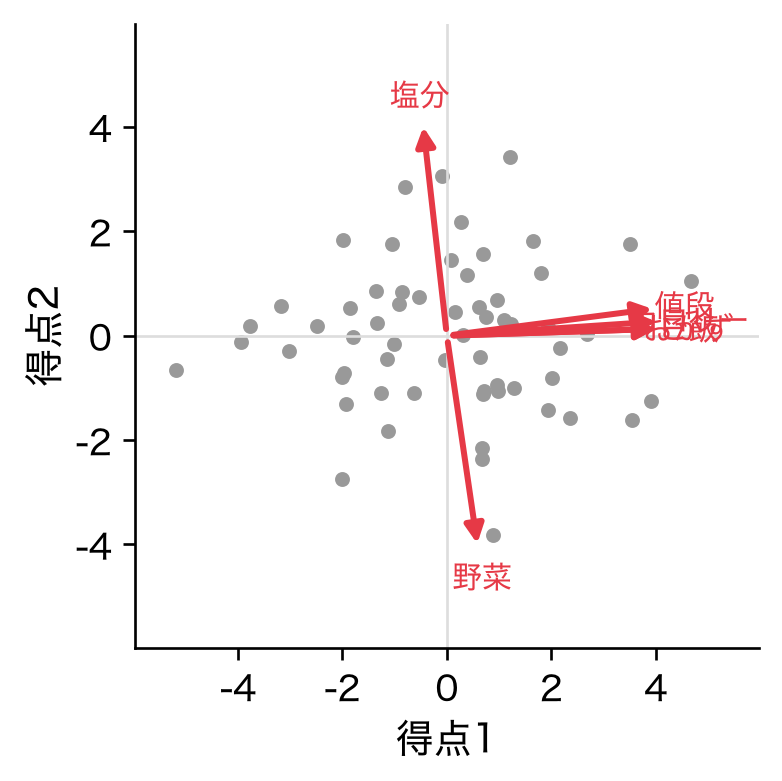
Q=2 なら、灰の棒が J = 1.27。交互最小二乗法で着いた J も 1.27。
帰結③：ピタゴラスの分解
\underbrace{\lVert\mathbf X\rVert_F^2}_{\sum_{m}\delta_m^2} =\underbrace{\lVert\mathbf F\mathbf A^\top\rVert_F^2}_{\sum_{m\le Q}\delta_m^2} +\underbrace{\lVert\mathbf E\rVert_F^2}_{\sum_{m>Q}\delta_m^2}
全体の二乗和が、近似と誤差にちょうど分かれる。行ごとの直角三角形を全部足したもの。
帰結④：AAᵀは影を作る
\mathbf F\mathbf A^\top=\mathbf X\mathbf A\mathbf A^\top, \qquad (\mathbf A\mathbf A^\top)(\mathbf A\mathbf A^\top)=\mathbf A\mathbf A^\top
\mathbf A\mathbf A^\top は第3回の \mathbf H と同じ、影を作る行列。各行を \mathbf A の列が張る面に落とす。
帰結⑤：寄与率
\frac{\lVert\mathbf F\mathbf A^\top\rVert_F^2}{\lVert\mathbf X\rVert_F^2} =\frac{\sum_{m\le Q}\delta_m^2}{\sum_{m}\delta_m^2} =1-\frac{J}{\lVert\mathbf X\rVert_F^2}
累積寄与率は誤差の裏返し。ホットケーキの例では 99.6%。
帰結⑥：R²と同じ形
\cos^2\theta=\frac{\lVert\mathbf F\mathbf A^\top\rVert_F^2}{\lVert\mathbf X\rVert_F^2}
\mathbf X と近似を np 個の数のベクトルと見たときの角 \theta。第1回の R^2 と同じ「影の長さの二乗の割合」。
帰結⑦：散らばりの割合
\mathbf F^\top\mathbf F=\boldsymbol\Delta_1\mathbf K_1^\top\mathbf K_1\boldsymbol\Delta_1=\boldsymbol\Delta_1^2 \quad\Longrightarrow\quad \frac1n\sum_{i}f_{im}^2=\frac{\delta_m^2}{n}
\delta_m^2/n は軸 m の得点の分散。寄与率は、全体の散らばりのうち軸 m が受け持つ割合。
帰結⑧：交互最小二乗法の得点
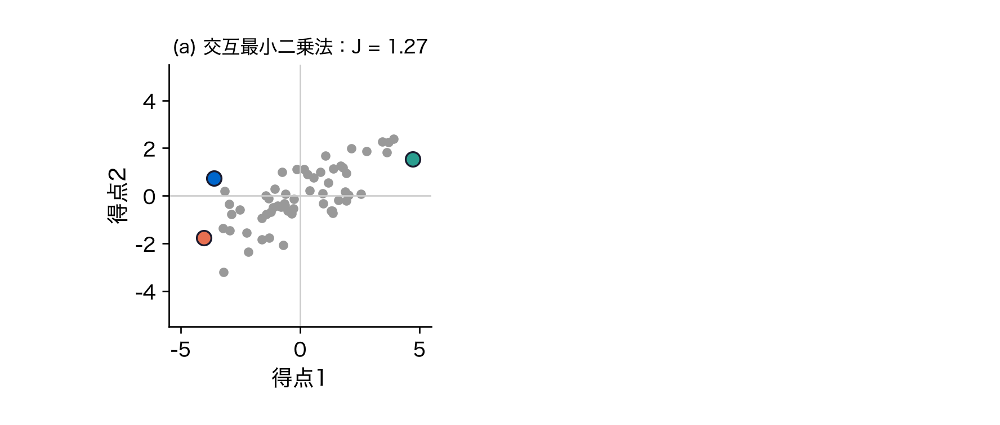
同じ60枚に交互最小二乗法（初期値1）。得点の2列の相関は +0.71。軸は回った位置で止まる。
帰結⑨：特異値分解の得点
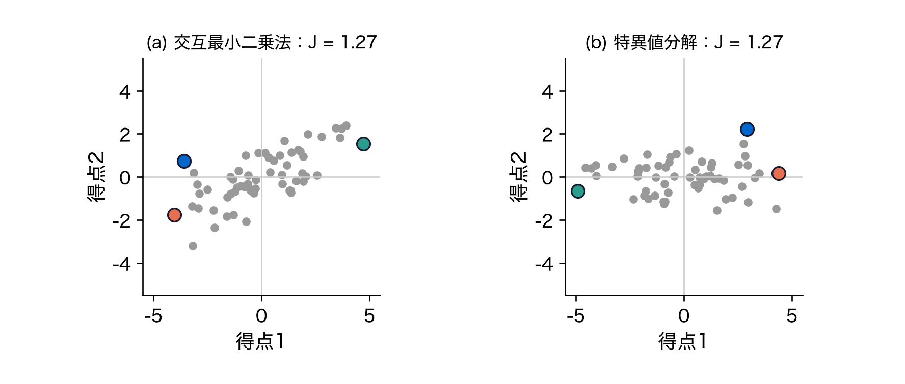
同じ J。得点1が最も広がる向きに並び、2列の相関は0。残るのは各軸の向きの反転だけ。
帰結⑩：決まるもの
| 交互最小二乗法（第9回） | 特異値分解（今回） | |
|---|---|---|
| J・近似 \mathbf F\mathbf A^\top・軸が張る面 | 決まる | 決まる（同じもの） |
| 軸1・軸2それぞれの向き | 初期値しだいで回る | \delta_m の順に決まる（符号だけ残る） |
| 得点の列どうし | 相関が残る | 相関0（\mathbf F^\top\mathbf F=\boldsymbol\Delta_1^2） |
| 軸を1本足したとき | 解き直す | 前の軸はそのまま |
位置づけ：地図のPCAの行
| モデル | 近似する相手 | 目的関数 | 解き方 | 回 |
|---|---|---|---|---|
| 線形回帰 | y | \lVert\boldsymbol y-\mathbf X\boldsymbol\beta\rVert_2^2 | 正規方程式を1回解く | 第1回 |
| 主成分分析 | \mathbf X | \lVert\mathbf X-\mathbf F\mathbf A^\top\rVert_F^2 | 交互に解く | 第9回 |
| 主成分分析 | \mathbf X | 同じ | 特異値分解を1回 | 第10回 |
| k-means | \mathbf X | \lVert\mathbf X-\mathbf G\mathbf C\rVert_F^2 | 交互に解く | 第11回 |
同じ目的関数を、別の解き方で解いた回。
第II部 実データ解析
第II部でやること
- 写真1枚に、第I部の手順（特異値分解1回）を当てる
- 交互最小二乗法と同じ答えに、1回で着くかを確かめる
- Q を変えて写真に戻し、誤差と寄与率を読む
データ：写真1枚
| 写真 | scikit-learnに付いている写真china.jpgを白黒にし、左の 400 列を切り出したもの |
| 行・列 | 画素の行 n = 427、画素の列 p = 400 |
| マス | 明るさ。黒が0、白が1 |
| \mathbf X | 各列から列の平均を引く。どの列も同じ明るさの目盛りなので標準化はしない |
第I部で導いたこと
- \min J=\sum_{m>Q}\delta_m^2：捨てた特異値の二乗和
- 交互最小二乗法の答えは、\mathbf L_1 を回したもの
- 累積寄与率 =1-J/\lVert\mathbf X\rVert_F^2
この3つを、写真の \mathbf X で確かめる。
手続き：何をどう計算したか
- 用意する：写真から列の平均を引いた \mathbf X（427×400）
- 特異値分解を1回：NumPyの特異値分解で \mathbf X=\mathbf K\boldsymbol\Delta\mathbf L^\top（特異値 400 個）
- 交互最小二乗法と比べる：Q=10 で、初期値3通りの交互最小二乗法（第9回の手順）も回す
- 写真に戻す：Q = 1, 5, 20, 50で \mathbf F\mathbf A^\top を作り、列の平均を足して写真として見る
- 誤差と寄与率：Q = 0〜100の J と累積寄与率
- 平均を引かない：写真そのものも同じように分解する
検証①：反復して着いたJ
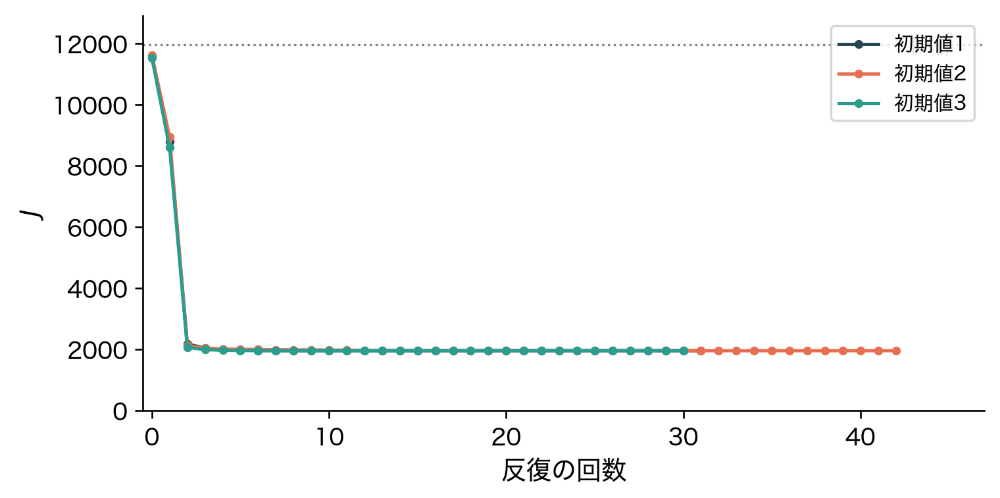
Q=10。交互最小二乗法は3通りの初期値から 30〜42 回の反復で同じ J に着いた。
検証②：1回で同じJ
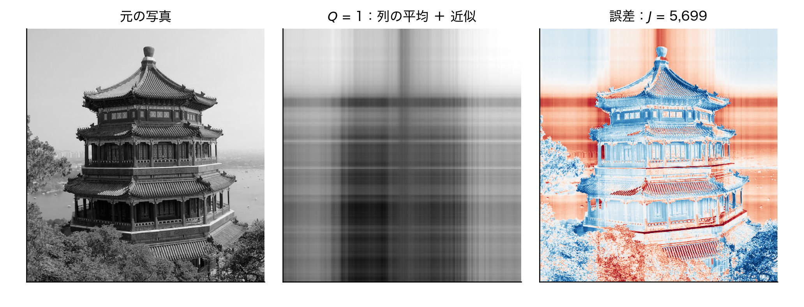
特異値分解1回の J=\sum_{m>10}\delta_m^2 = 1,945.49。反復して着いた値と同じ。
検証③：近似も同じ
| 交互最小二乗法の答え | 初期値1 | 初期値2 | 初期値3 |
|---|---|---|---|
| J | 1,945.491 | 1,945.491 | 1,945.491 |
| \mathbf F\mathbf A^\top と \mathbf K_1\boldsymbol\Delta_1\mathbf L_1^\top の差（最大） | 7.2e-05 | 6.8e-05 | 6.8e-05 |
特異値分解の J は 1,945.491。近似 \mathbf F\mathbf A^\top のマスの差も、止めた位置の誤差にとどまる。
検証④：Aは回ったL₁
| 交互最小二乗法の答え | 初期値1 | 初期値2 | 初期値3 |
|---|---|---|---|
| J | 1,945.491 | 1,945.491 | 1,945.491 |
| \mathbf F\mathbf A^\top と \mathbf K_1\boldsymbol\Delta_1\mathbf L_1^\top の差（最大） | 7.2e-05 | 6.8e-05 | 6.8e-05 |
| \mathbf A と \mathbf L_1\mathbf R の差（最大） | 2.2e-05 | 2.4e-05 | 2.0e-05 |
| \mathbf R=\mathbf L_1^\top\mathbf A の対角の絶対値（最小） | 0.01 | 0.06 | 0.03 |
\mathbf A は \mathbf L_1\mathbf R とよく一致し、\mathbf R の対角は1から遠い。交互最小二乗法の答えは、\mathbf L_1 を回したもの。
検証⑤：L₁からは動かない
| 交互最小二乗法の答え | 初期値1 | 初期値2 | 初期値3 |
|---|---|---|---|
| J | 1,945.491 | 1,945.491 | 1,945.491 |
| \mathbf F\mathbf A^\top と \mathbf K_1\boldsymbol\Delta_1\mathbf L_1^\top の差（最大） | 7.2e-05 | 6.8e-05 | 6.8e-05 |
| \mathbf A と \mathbf L_1\mathbf R の差（最大） | 2.2e-05 | 2.4e-05 | 2.0e-05 |
| \mathbf R=\mathbf L_1^\top\mathbf A の対角の絶対値（最小） | 0.01 | 0.06 | 0.03 |
\mathbf A=\mathbf L_1 から2つの更新を1回ずつ計算しても、\mathbf A の変化は 6e-16。
検証⑥：ピタゴラスの分解
\underbrace{\lVert\mathbf X\rVert_F^2}_{11{,}948.8}=\underbrace{\lVert\mathbf F\mathbf A^\top\rVert_F^2}_{10{,}003.3}+\underbrace{\lVert\mathbf E\rVert_F^2}_{1{,}945.5}
Q=10。累積寄与率は 10,003.3 ÷ 11,948.8 ＝ 83.7%。
デモ①：Q=1の近似
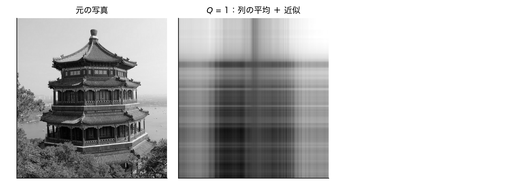
1枚だけ。横の縞と縦の縞の掛け算しか描けない。
デモ②：Q=1の誤差
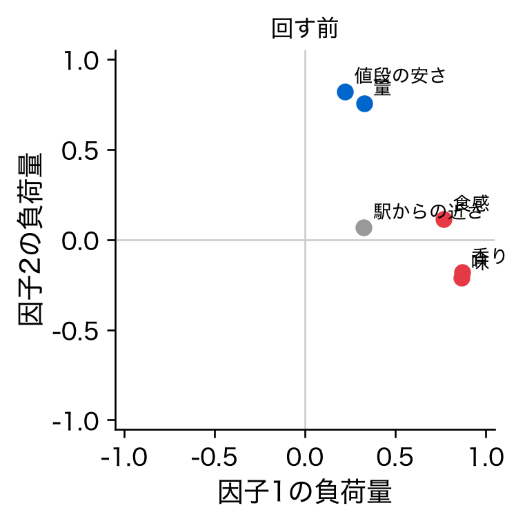
誤差 \mathbf X-\mathbf F\mathbf A^\top。赤は明るすぎ、青は暗すぎ。写真のほとんどが残っている。
デモ③：Q=5
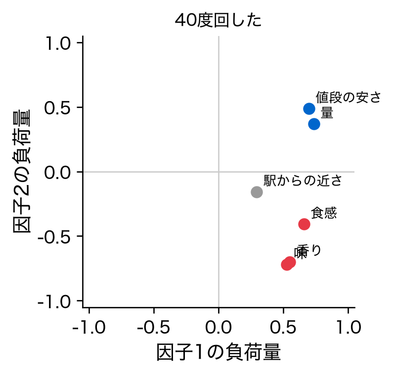
塔・空・水面の大きな明暗が出る。誤差は塔の細部に残る。
デモ④：Q=20
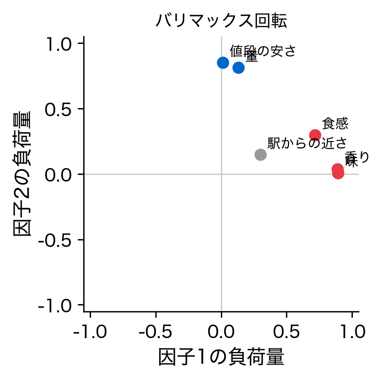
屋根の段が分かれる。誤差は木の葉と輪郭へ移る。
デモ⑤：Q=50
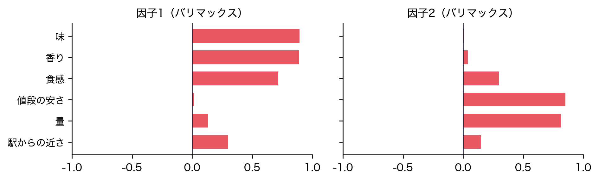
ほぼ元の写真。誤差に残るのは細かな輪郭だけ。
デモ⑥：少ない数で持てる
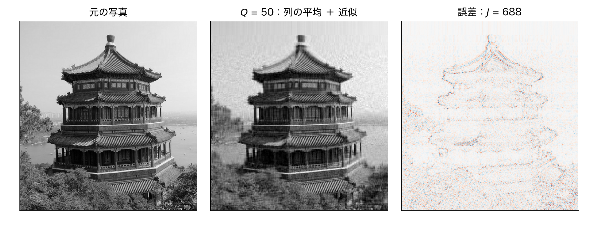
数は (n+p)Q = 41,350 個で、元の 170,800 個の 24%。
デモ⑦：誤差は捨てたδ²の和
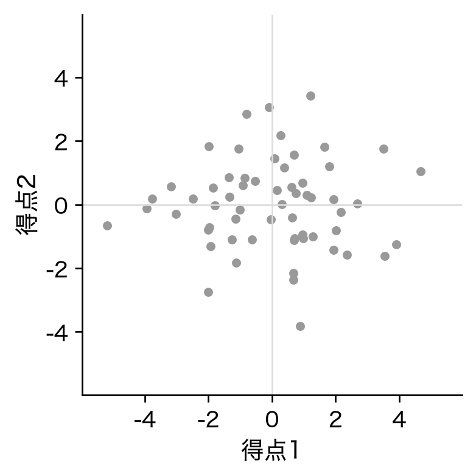
線は \sum_{m>Q}\delta_m^2。はじめの数本で大きく下がり、あとはゆっくり下がる。
デモ⑧：直接測っても重なる
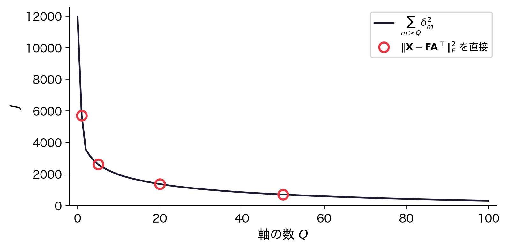
赤い丸は、近似の誤差を直接測った値。どの Q でも線に重なる。
デモ⑨：累積寄与率

デモ⑦の線を、1-J/\lVert\mathbf X\rVert_F^2 で上下に裏返したもの。
デモ⑩：1回の分解で全部のQ
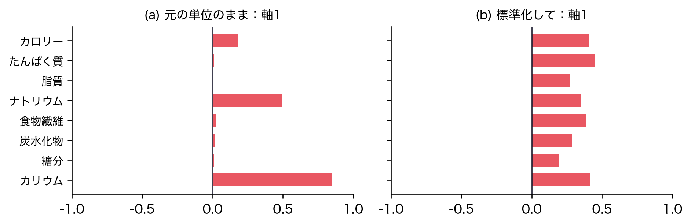
90%に届くのは Q = 25。どの Q の値も、1回の分解から出る。
解釈①：1枚ずつの模様
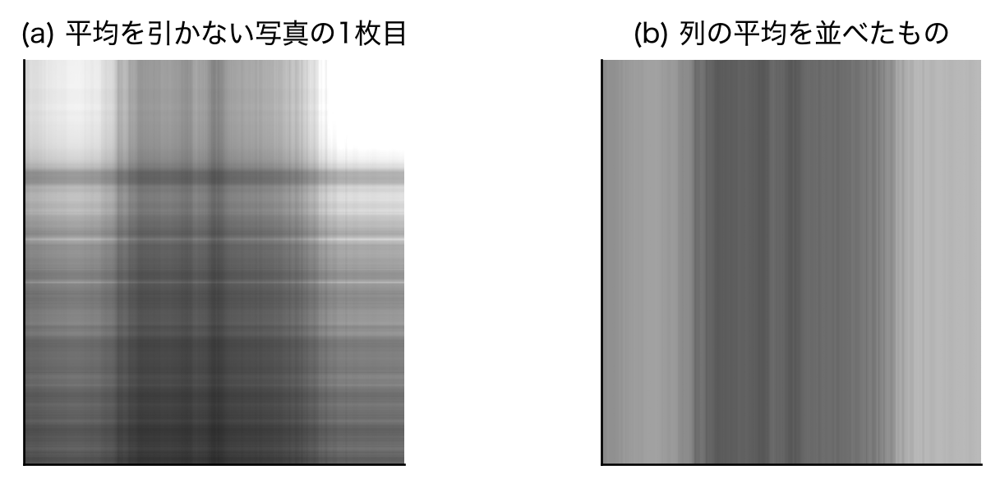
\delta_m\boldsymbol k_m\boldsymbol l_m^\top の上位4枚。番号が進むほど細かい模様。
解釈②：交互最小二乗法の1枚
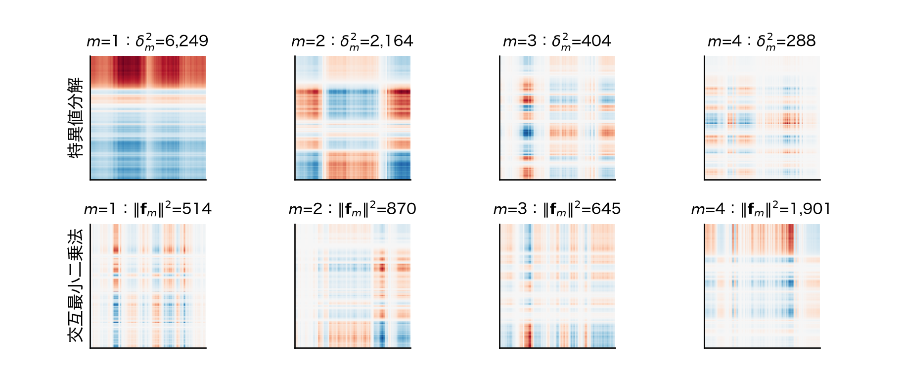
交互最小二乗法（初期値1）の \boldsymbol f_m\boldsymbol a_m^\top。10枚の和は同じでも1枚ずつは混ざる。
落とし穴①：平均を引かずに分解
手順の1段目は「列の平均を0にする」だった。
写真の明るさは、どのマスも0以上。この1段目を省き、写真そのものを特異値分解する。
落とし穴①：1本目を平均が取る

\boldsymbol l_1 は、列の平均の明るさとほぼ同じ形（相関 0.997）。1本目が平均の情報に取られる。
落とし穴②：寄与率を比べる
列の平均を引いた \mathbf X と、写真そのもの。
同じ Q で、累積寄与率と J を並べてみる。
落とし穴②：寄与率が高く見える
| 列の平均を引いた \mathbf X | 写真そのもの | |
|---|---|---|
| \lVert\mathbf X\rVert_F^2 | 11,949 | 61,868 |
| Q=1 の累積寄与率 | 52.3% | 89.8% |
| Q=1 の J | 5,699 | 6,319 |
| Q=5 の累積寄与率 | 78.2% | 95.7% |
| Q=5 の J | 2,599 | 2,663 |
写真そのものは寄与率が高いのに、J は大きい。
落とし穴②：分母が違う
| 列の平均を引いた \mathbf X | 写真そのもの | |
|---|---|---|
| \lVert\mathbf X\rVert_F^2 | 11,949 | 61,868 |
| Q=1 の累積寄与率 | 52.3% | 89.8% |
| Q=1 の J | 5,699 | 6,319 |
| Q=5 の累積寄与率 | 78.2% | 95.7% |
| Q=5 の J | 2,599 | 2,663 |
分母の \lVert\mathbf X\rVert_F^2 に平均の明るさが入る。違う \mathbf X どうしは、同じ目盛りの J で比べる。
締め
まとめ①：Xを1回分解する

上位 Q 本を残す：\hat{\mathbf F}=\mathbf K_1\boldsymbol\Delta_1、\hat{\mathbf A}=\mathbf L_1。低ランク近似と主成分分析は同じ問題。
まとめ②：Jと寄与率
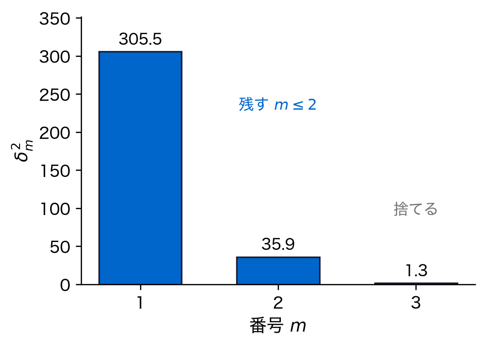
J は捨てた特異値の二乗和。累積寄与率 =1-J/\lVert\mathbf X\rVert_F^2 は、その裏返し。
まとめ③：軸の順番が決まる

軸は \delta_m の順に並び、得点は無相関。残るのは向きの反転だけ。
演習では①：顔画像
- 演習11：4096ピクセルの顔画像を、50本の軸で87.4%
- ピクセルはどれも同じ目盛りなので、標準化しない
- 今日の写真と同じ扱い
演習では②：自動車
- 演習12：6つのスペックを、2本の軸で91.9%
- 単位がばらばらなので、標準化してから
- どちらも 1-J/\lVert\mathbf X\rVert_F^2。何を \mathbf X にしたかで数字が変わる
次回予告①：1回で解けた理由
得点 \mathbf F は、連続な値を自由にとれた。
だから、特異値分解の上位 Q 本がそのまま答えになった。
次回予告②：反復が要る問題
| 近似 | 1回で解けたか | |
|---|---|---|
| 主成分分析 | \mathbf F\mathbf A^\top（\mathbf F は連続な値） | 解けた（特異値分解） |
| k-means | \mathbf G\mathbf C（\mathbf G は0/1） | ？ |
次回予告③：行を群に分けると
\min_{\mathbf G,\mathbf C}\ \lVert\mathbf X-\mathbf G\mathbf C\rVert_F^2 \qquad\text{（第8回。}\mathbf G\text{ の各行は1が1つ）}
問い：行を群に分けると、どう解くのか？